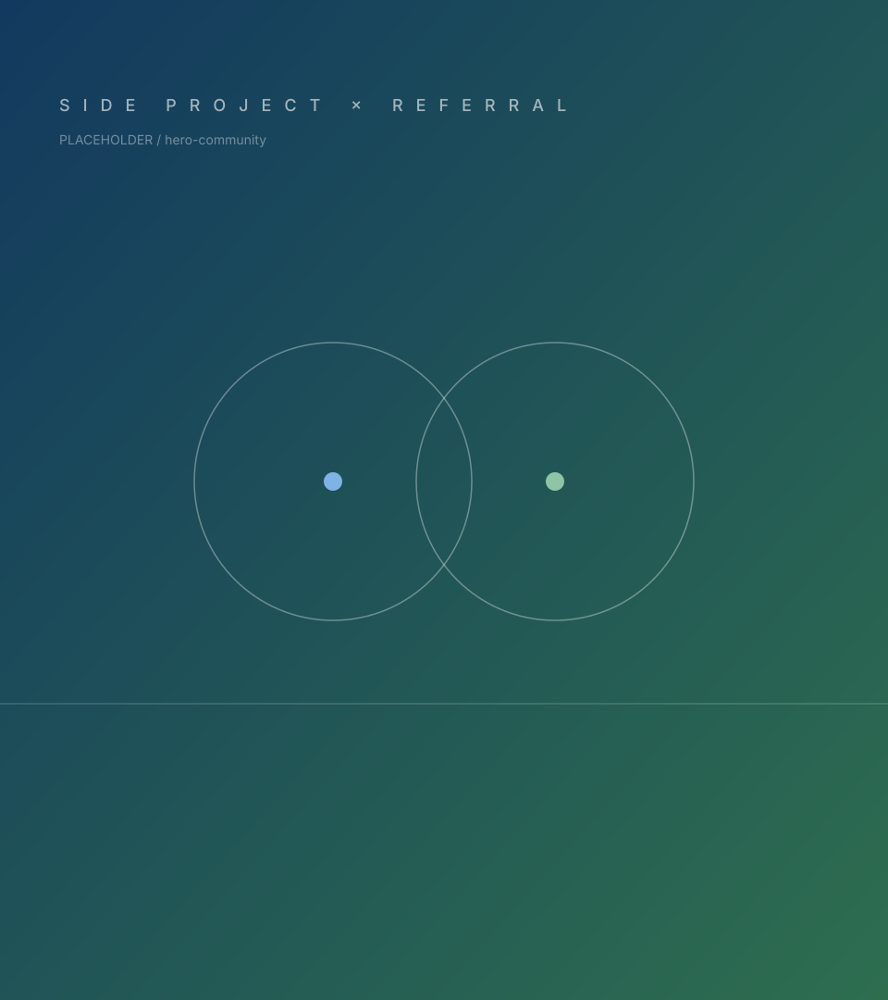

副業 スキルを、ほかの事業で活かす
- 01 スキルと稼働時間を入力し、マッチ度の高い案件を探す
- 02 上長の承認を得たうえで、案件詳細から応募する
- 03 掲載部署と面談し、条件がそろえば参画スタート
Side Project & Referral
事業の垣根をこえた副業と、信頼できる仲間を迎えるリファラル採用。 あなたのスキルと人とのつながりを、グループの力に変えるマッチングの場です。

Matching
案件タイプを選ぶと、そのタイプに合った条件で絞り込めます。 マッチング条件を入力すると、あなたとの一致度（マッチ度）が表示されます。
条件に合う案件が見つかりませんでした
条件を少しゆるめるか、リセットしてもう一度お試しください。
How it works
Rules
For Managers
副業案件・リファラル求人の掲載は、人事部門で受け付けています。